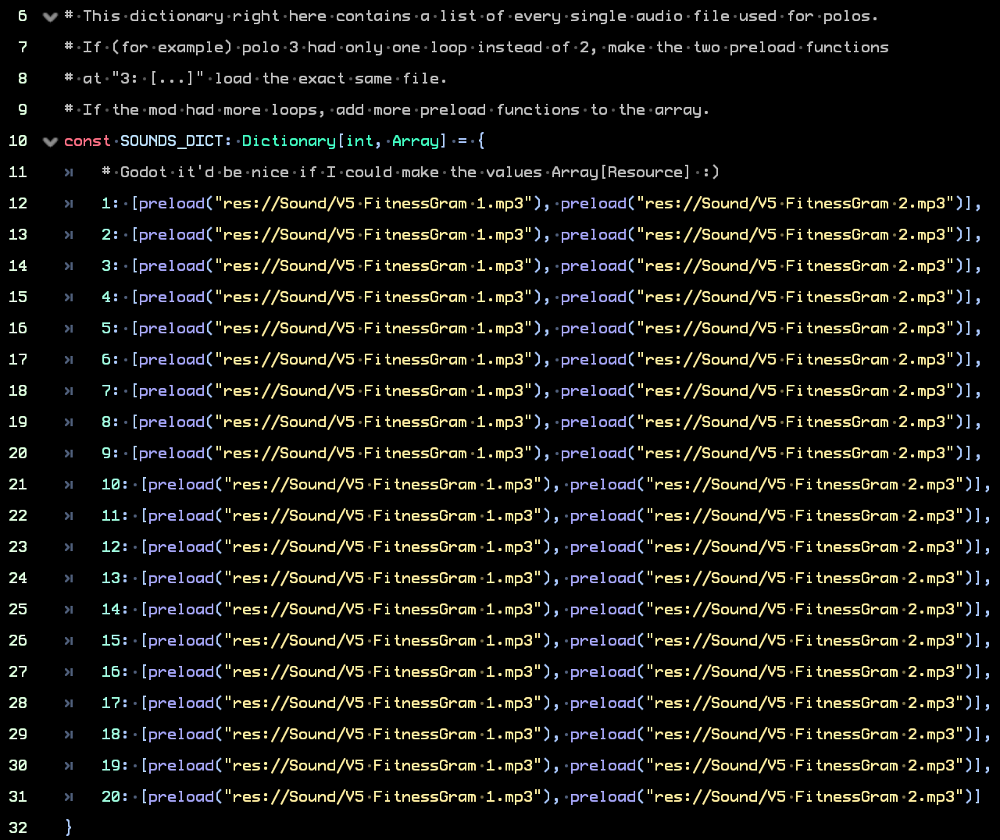

Adding sounds to polos is not that hard. As you will be able to see, it's fairly easy. But first of all, you will need to make the sounds.
RhythmPrism requires sounds to be formatted in a specific way for better modularity. Audio files need to be split into two smaller files, one for each loop part. For example, if a polo has two different loops, RP would only load the sound file corresponding to the active loop instead of using an audio file that contains both loops. This means you'll need to have two files prepared, two for each polo. There's 20 polos by default, this means 40 files in total. The type of file (wav, mp3, ogg, etc) can be whatever you want as long as Godot can read it. I recommend using either the OGG or the wav format. Either of them have their advantages? OGG has great compression, which means that files don't take as much space. But they don't sound as good as a wav file, that's uncompressed (but takes more space).
Once you have all sounds prepared, all you need to do is move the files into res://Sound/. That path corresponds to the Sound folder inside the project directory. Godot will automatically detect and import them into the project. You'll see them appear in the bottom left pane.

For this you're gonna need to read a bit of the code. Don't worry though. You don't need to do anything complicated. Open the Scripts folder and open AudioPlayer.gd. In line 10, you'll see code that looks like the image to the left. If you only see line 10, press on the arrow next to the line number to unfold the rest of the lines.
The 1, 2, 3, ... numbers you see represent each polo. So line 12 has the sounds for polo 1, line 13 the sounds of polo 2 and so on. The preload functions load the sounds into memory when the project is run. The first one corresponds to the first loop and the second one corresponds to loop 2.
All you need to do is replace where it says "res://Sound/V5 FitnessGram 1.mp3" with the path to the corresponding sound (including quotation marks). You can also drag and drop the sound in between the preload parentheses to place the path.
One line could look like this:6: [preload("res://Sound/Loop1-voice6.ogg"), preload("res://Sound/Loop2-voice6.wav")]
If a polo has only one loop because it's the same in both loops, then both preload functions can be the same. For example:12: [preload("res://Sound/voice12.wav"), preload("res://Sound/voice12.wav")]